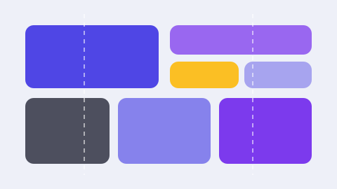

ما الفرق بين Grid و Flexbox؟
القاعدة المختصرة: Flexbox يوزّع عناصر في اتجاه واحد (صف أو عمود)، وGrid يبني شبكة في اتجاهين (صفوف وأعمدة معاً). لذلك: القوائم والأزرار وشريط التنقل → Flexbox. أما هيكل الصفحة وبطاقات المنتجات وصفحة المقال → Grid.
الأساسيات: الأعمدة والصفوف والمسافة
لتبدأ، أعلن عنصر كحاوية شبكة ثم حدّد أعمدتها:
.cards {
display: grid;
grid-template-columns: repeat(3, 1fr);
gap: 24px;
}الوحدة fr تعني «جزء من المساحة المتاحة». فـ repeat(3, 1fr) أي ثلاثة أعمدة متساوية. ولاحظ أن gap يضع المسافة بين الخلايا دون أن تضيف هوامش يدوية لكل عنصر.
تخطيط متجاوب بلا استعلامات وسائط
أغمض ميزة في Grid: auto-fit مع minmax يجعلك تتخلى عن غالبية استعلامات الوسائط:
.cards {
display: grid;
grid-template-columns: repeat(auto-fit, minmax(260px, 1fr));
gap: 24px;
}الترجمة الحرفية: «املأ الصف بأكبر عدد ممكن من الأعمدة، بحيث لا يقل عرض العمود عن ٢٦٠ بكسل». على شاشة عريضة ستحصل على ثلاثة أو أربعة أعمدة، وعلى هاتف على عمود واحد، دون سطر واحد من CSS إضافي.
الأماكن المسمّاة: التخطيط كما تراه
يمكنك رسم التخطيط بأسماء واضحة، ثم توزيع العناصر عليه:
.layout {
display: grid;
grid-template-areas:
"header header"
"content side"
"footer footer";
grid-template-columns: 2fr 1fr;
gap: 20px;
}
.layout header { grid-area: header; }
.layout main { grid-area: content; }
.layout aside { grid-area: side; }
.layout footer { grid-area: footer; }الفائدة الكبيرة هنا هي الوضوح: من يقرأ الكود يفهم الشكل. وعلى الهاتف يكفي أن تعيد تعريف الأماكن في عمود واحد:
@media (max-width: 760px) {
.layout {
grid-template-areas: "header" "content" "side" "footer";
grid-template-columns: 1fr;
}
}المحاذاة: متى تستخدم أي خاصية
الخلط بين خصائص المحاذاة هو أكثر ما يحيّر المبتدئين. الجدول التالي يحسم الأمر:
| الخاصية | تُوضع على | ماذا تتحكم فيه |
|---|---|---|
justify-items | الحاوية | موضع كل عنصر داخل خليته أفقياً |
align-items | الحاوية | موضع كل عنصر داخل خليته رأسياً |
place-items | الحاوية | اختصار للاثنتين معاً |
justify-content | الحاوية | توزيع الشبكة كلها أفقياً حين تكون أصغر من الحاوية |
align-self | العنصر | محاذاة عنصر واحد فقط رأسياً |
ملاحظة مهمة للواجهات العربية
Grid يحترم اتجاه الصفحة. مع dir="rtl" يصبح العمود الأول على اليمين تلقائياً، وترتيب grid-template-areas ينعكس بصرياً. استخدم الخصائص المنطقية مثل margin-inline-start بدل margin-left ليبقى التخطيط سليماً في الاتجاهين.
أخطاء شائعة تجنّبها
- استخدام Grid لكل شيء: شريط تنقل من عنصرين لا يحتاج شبكة، Flexbox أكفى.
- إغفال
min-width: 0: الخلايا التي تحتوي نصاً طويلاً ترفض الانضغاط؛ أضف هذا السطر لعنصر الشبكة. - تعويض
gapبالهوامش: سيؤدي إلى مسافة زائدة عند أطراف الشبكة. - تعقيد التسميات: ثلاث مناطق كافية لأغلب الصفحات.
الخلاصة في ثلاث نقاط
- Grid للتخطيط ثنائي الاتجاه، Flexbox لتوزيع العناصر في اتجاه واحد.
repeat(auto-fit, minmax(260px, 1fr))يمنحك تجاوباً تلقائياً بلا استعلامات وسائط.- الأماكن المسمّاة تجعل الكود مقروءاً، وتعديل الهاتف يصبح سطرين فقط.